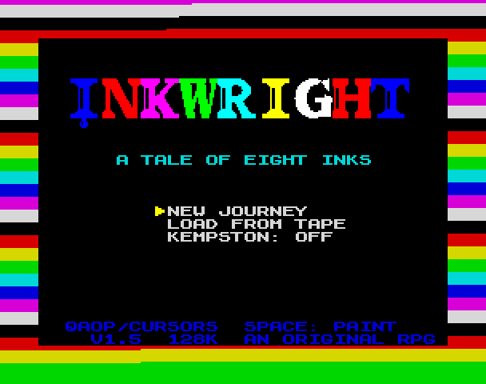

128K20 November 2026
The game: paint the Vale back
The Grey King has drunk the colour from the Vale, and only the inkwrights remember how to paint it back. There is one apprentice left: you. Half an hour to an hour of exploring, talking, fighting and painting, from Orla's house in Inkwell to the top of the Grey Tower.
Once the Vale was bright with eight inks. Then the Grey King came down from his tower and drank the colour from the world, until only the grey was left. Orla, the last old inkwright, sends her apprentice to the three shrines for the first inks: BLUE, RED and GREEN.
Each ink is a spell in a fight and a key in the world. Mixed, they make the others. All three make WHITE, the one ink the King cannot drink.

How it works
The keys
Q A O P or the cursor keys (5 6 7 8) to walk. SPACE, ENTER, M or 0 to act: talk to someone you face, open a chest, read a sign, step up to an altar. With nothing in front of you it opens the field menu: your status, your items, MEND (once GREEN is yours), the map of the rooms you have walked, and the colour journal. A Kempston joystick works too: switch it on in the title's menu.
In a fight: FIGHT with your pen, INK to cast a colour you hold, ITEM, or FLEE.
Where to go
The people of the Vale say where to go next, and the signs say where the roads lead. The Tide Shrine on the Mere needs no ink at all. BLUE freezes the river's shallow fords, which opens the south. RED burns the thorn hedge, and GREEN grows a bridge over the Rift. Levels go to 20. There are six pens and six coats, tonics and ink pots for the road, and a feather that takes you home.
Nothing dies
There is no game over. Lose a fight and the tape rewinds: the fight unloads backwards into the room, and you are back where you came in, a little wiser. And you never kill anything. Every monster is a creature of the Vale with its colour stolen: paint it right and the ink runs home. The SUNWISP is a sunflower again, the QUILLRAT a hedgehog, the BRINECRAB a kingfisher. Restore enough of a kind and it has all gone home, and the places you have healed go quiet.
Even the Grey King can be saved, if you bring him what he lost. That ending is yours to find.
Your apprentice
You choose a name, a keepsake from Orla's shelf and the colour of your cloak, on the tape while it loads or at NEW JOURNEY. The people of the Vale call you by your name, and your cloak stays grey until you win its ink back.
The eight lost pigments
When the Grey came, eight little pots of pigment were lost across the Vale, one of every colour. They are off the beaten path: behind gates only an ink opens, in the corners of the shrines. Bring them home to Orla and she makes your quill hold more ink, and when all eight are home she has something special for you. She will tell you where to look for the ones still missing.
Two more keys
BLUE, RED, GREEN, YELLOW and WHITE all open something out in the Vale. Mix the others, and look again at the dead ends. Somewhere behind them is the oldest story in the Vale, and the hardest fight in it, harder than the King. Neither is on the way to the end: they are there for whoever goes looking.
Wishes
Some of the people you meet miss a creature the Grey took: a child who has never seen a hedgehog, a farmer whose beans want bees. They will tell you which monster it became. Restore one, anywhere, and go back to see them.
A second coat
Finish it and the title offers A SECOND COAT. The first coat never takes: the Grey soaks back through, every ink drains away again, and the monsters are tougher. You keep your level, your pen and coat, your gold and your journal. Monsters are worth twice the XP, and the end says which coat it was.
A fourth ink?
The ending counts the inks you found, out of four. Three of them are on the way. In the Deep Thornwood, Bram says "BRIGHT is not a colour. It's an attitude." Somewhere in the Vale is the Prism Shrine, and something in it that never keeps one colour for long. The people know more than they say. Listen to them.
How it was checked
The build plays the game itself from set-up moments: a new journey from the title, walking, a door, a fight, every spell and gate, an altar and its guardian, the inn, a save to tape and a load back, a shop, the field menu and its map, the title's tour, the Grey King, the ending and a second coat. A robot player then plays the whole journey from NEW JOURNEY to THE END by pressing keys, the way a person would, and the numbers were tuned by its runs. Another tool searches the whole world and shows the game can be finished: each altar with only the inks held by then, the King with all three, every chest and every person reached, and every door walkable back from. Not yet played through on a real 128K: that is what the testers are for.
Screens
As our emulator draws it
Full frames, border and all. Click a picture to see it bigger.


Download
Load it yourself
For the 128K. Three tapes, one game. inkwright-turbo.tzx lets you make your apprentice while it loads, in 3 minutes; inkwright-special.tap does the same at the ROM's own speed, in 6. Both must play in real time, as a cassette does (a real 128K, or ZX Spin or Retro Virtual Machine with fast loading off). inkwright-normal.tap loads the ordinary way and works in any emulator, even ones that load instantly; the game asks the same questions when you pick NEW JOURNEY. Not sure? Take the normal one.
- It needs a 128K (a 128K or a grey +2). Pick Tape Loader. On a 48K the tape says it needs a 128K and stops.
- Two tapes, one game: pick by how your emulator loads. Once you are playing they are exactly the same.
- The special tape,
inkwright-special.tap, has the loading page: while it loads you type your name and choose a keepsake and a cloak, with a candle burning down beside you. The Spectrum's own loader can't do that, so the game reads the tape itself, and the tape has to play in real time, the way a cassette does. Use it on a real 128K, or in ZX Spin or Retro Virtual Machine with instant and fast loading switched off. It takes about six minutes. - The normal tape,
inkwright-normal.tap, loads the ordinary way, through the Spectrum's own loader, so it works in every emulator, including the ones that load a tape instantly (Fuse with fast loading, phone and web emulators). There is no loading page: when you pick NEW JOURNEY the game asks the same questions on its own screens. Not sure which? Take this one. - Saving: at an inn, start the emulator's tape recording, then say yes. To carry on later, load that tape with Load from tape on the title.
- On a real Spectrum: play the tape into the EAR socket from a tape player or a TZX player.